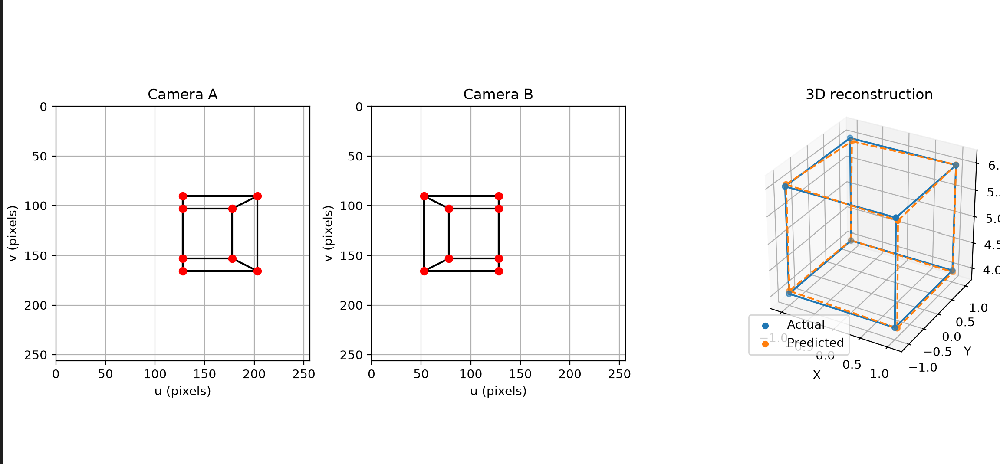
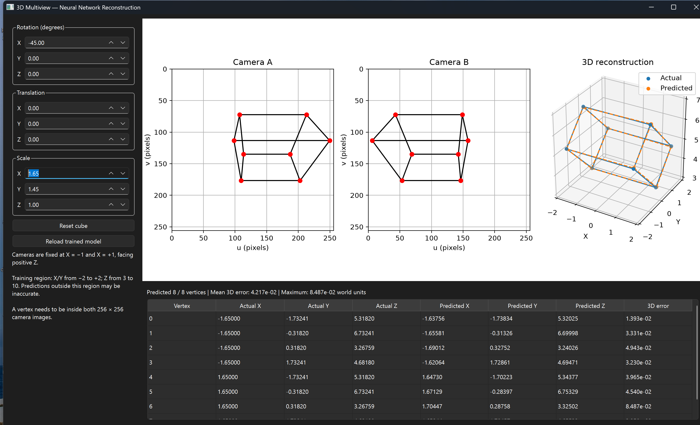
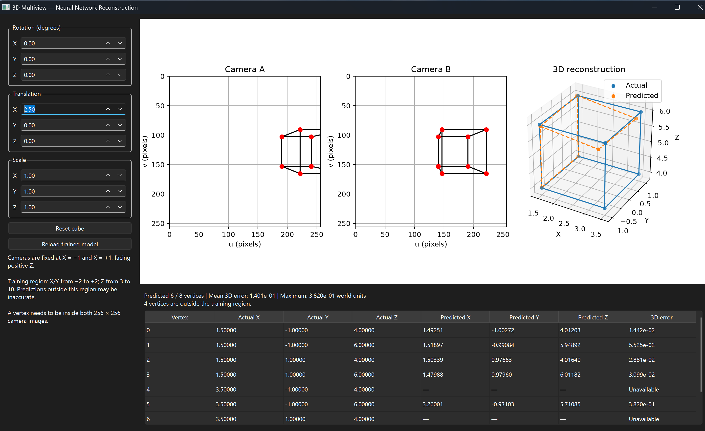

THE FOUNDATION
Defining the cube geometry
The cube is represented by eight 3D vertices and twelve connecting edges. Translation, rotation, and scaling change its position, orientation, and dimensions using vector and matrix operations.
Keeping the geometry explicit provides known coordinates for every vertex. Those coordinates serve as ground truth when evaluating the reconstruction.
- 3D geometry →Transform the cube's known vertices.
- Two camera views →Project each vertex into paired 2D coordinates.
- Learned reconstructionPredict 3D coordinates and compare with ground truth.
CREATING THE OBSERVATIONS
Projecting into two camera views
The camera code converts world coordinates into camera coordinates and applies perspective projection. Depth determines how far each point appears from the image center.
The training setup and viewer use cameras at X = −1 and X = +1, both facing
positive Z. Each view has a 256 × 256 image area. Corresponding vertices
provide four input values: uA, vA, uB, vB.
u = fx · x / z + cx
v = cy − fy · y / z
Projection in camera coordinates, with focal lengths fx and fy and image center (cx, cy).


BUILDING THE TRAINING DATA
Generating synthetic examples
The dataset generator samples 3D points with X and Y between −2 and +2 and Z between 3 and 10. Each point is projected through both cameras; only points visible inside both image areas are retained.
Each CSV row stores the four projected coordinates and the original
x, y, z position. The generator defaults to 10,000 examples and a
fixed random seed. Training uses an 80% training, 10% validation, and 10% test split.
Input and target normalization statistics are calculated from the training split and saved with the model for use during prediction.
LEARNING THE INVERSE MAPPING
Predicting a vertex in 3D
A fully connected network maps one pair of 2D observations to one 3D point. The same network is applied independently to each visible cube vertex, and the known edge connections join the predictions into a wireframe.
The training loop minimizes mean squared error using Adam and backpropagation. It saves the checkpoint with the lowest validation loss, then evaluates that checkpoint on the test split using normalized MSE and mean 3D distance in world units.
4 inputs
uA, vA, uB, vB coordinates.
32 → 32
Two hidden layers with ReLU activations.
3 outputs
Predicted x, y, z coordinates.
THE INTERACTIVE DEMO
Inspecting the reconstruction
The PySide6 interface provides controls for rotation, translation, and scale. Matplotlib displays both camera projections alongside the original and predicted 3D wireframes. A table lists the coordinates and reconstruction error for each vertex.
The captured rotated and scaled configuration predicts all eight vertices, with a mean 3D error of about 0.042 world units. This is the error for the shown configuration, rather than an aggregate test-set result.


UNDERSTANDING THE LIMITS
Moving outside the training region
Translating the cube beyond the sampled region exposes the model's limited generalization. In this capture, four vertices are outside the training region and only six are visible in both camera images. The viewer reports a mean error of about 0.140 world units across the available predictions.


The experiment assumes known vertex correspondences and the fixed camera setup used for training. It reconstructs synthetic coordinates; it does not detect cube vertices in photographs. The captures show why the training region and visibility checks matter when interpreting the results.